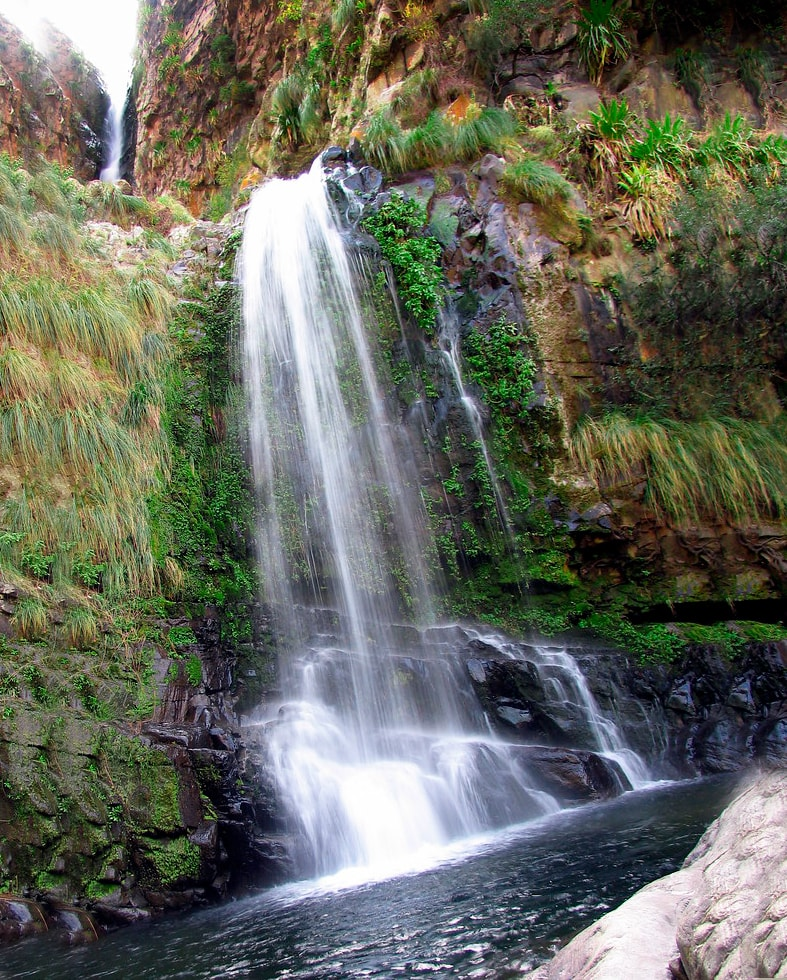

Lugares turisticos de La Paz
-
Tiwanaku
Tiwanaku (Tiahuanaco o Tiahuanacu) es un importante sitio arqueológico precolombino. Tiwanaku es reconocido por los eruditos andinos como uno de los precursores más importantes del Imperio Inca, que floreció como la capital administrativa y ritual de un gran poder estatal durante aproximadamente quinientos años. Las ruinas del antiguo estado de la ciudad están cerca de la costa sureste del Lago Titicaca, a unos 72 km (44 millas) al oeste de La Paz.-
Que ver
Los restos de una civilización preincaica. Esta ciudad monumental en la sierra boliviana a 13,000 pies sobre el nivel del mar y uno de los 754 sitios reconocidos como Patrimonio de la Humanidad, Tiwanaku está rodeada por cadenas montañosas, con el Lago Titicaca en su lado oeste. Los bloques sólidos y macizos de una piedra no autóctona de la planicie plana dan lugar al apodo del sitio, "Stonehenge of the Americas". El museo contiene la mayoría de las cosas increíbles construidas por la gente de Tiwanakan. Se recuperó un esqueleto de unos 13,000 años de antigüedad. Este lugar es bastante mágico. -
Que hacer
Toma tantas fotos como puedas. Este sitio es hermoso, la arquitectura y el estilo son impresionantes. -
Cosas que comprar
Muchas mujeres indígenas venderán cerámica, bufandas, ropa, artesanías y otras cosas hechas a mano. En realidad, no cobran mucho, y estos artículos valen la pena por el precio. Probablemente solo vengas aquí una vez en tu vida, por lo que querrás asegurarte de comprar cosas que tendrás que recordar. -
Donde comer
Hay un par de restaurantes cerca del museo. Son un poco caros, pero la comida es exquisita. Asegúrese de tener cuidado al comer pescado u otros mariscos, deben estar bien cocinados. Encontrarás gente vendiendo agua y bebidas. En los restaurantes, tienen más variedad. -
Donde alojarse
Alojamiento en Tiwanaku -
Slir
No quieres salir de esta área. La zona que rodea Tiwanaku y la pequeña ciudad que la rodea es bastante estéril. Verás una pequeña cadena montañosa al oeste de las ruinas y otras montañas alrededor. La ciudad de Tiwanaku se encuentra a 71 kilómetros de la ciudad de La Paz ya 15 kilómetros del Lago Titikaka, que es el lago más alto del mundo, ubicado a 3485 m.a.s.l. Para llegar a la ciudad de Tiwanaku desde la ciudad de La Paz puede tomar una minivan. Las minivans salen del área del Cementerio General, ubicada detrás del mercado de flores. Los minivans salen cada hora diariamente. El tiempo aproximado de viaje es de dos horas en minivan o de una hora si toma un vehículo privado. El camino está en buenas condiciones y en el camino disfrutará de los paisajes de las tierras altas circundantes y verá las ciudades de Laja y Tambillo. La tarifa de transporte es de 18 a 22 bolivianos por trayecto, que es de aproximadamente 3 dólares (podría variar según la tasa de cambio).
-
-
Copacabana
Copacabana es un pequeño pueblo ubicado en la costa boliviana del lago Titicaca. Situado relativamente cerca de la capital de La Paz, es un popular destino turístico para viajeros extranjeros y locales. Copacabana solía ser considerada una "región mística", un centro ceremonial de diversas culturas que existió allí antes de la época colonial y en la actualidad se considera un centro de peregrinación religiosa a menudo visitado por devotos creyentes de la "Virgen Morena", la Santísima Virgen de Copacabana. Los feligreses vienen a este lugar para recibir las bendiciones de la Virgen María y para hacer la tradicional "Ch'alla" (palabra aymara, que se refiere a una práctica ritual en Bolivia, en la cual la propiedad es "bendecida" con la creencia de que esta bendición protegería las posesiones de las personas). Cerca de la ciudad de Copacabana hay varias atracciones prehispánicas como "La Horca", "El Baño" y "El Asiento del Inca", todos que forman parte de un legado impresionante e histórico que se puede encontrar diseminado por toda la zona, incluidas las islas del Sol y la Luna.
Cerca de la ciudad de Copacabana hay varias atracciones prehispánicas como "La Horca", "El Baño" y "El Asiento del Inca", todos que forman parte de un legado impresionante e histórico que se puede encontrar diseminado por toda la zona, incluidas las islas del Sol y la Luna.
-
Historia
Este es el Copacabana original, que en realidad da nombre a la playa de Río (y sí, a la canción de Barry Manilow). El nombre deriva del Aymara kota kawana, que significa "vista del lago", y la región fue venerada por el Inca incluso antes de que los españoles construyeran su capilla de la Virgen y la convirtieran en un sitio de peregrinación católica. -
Orientación
La plaza central de la ciudad es la Plaza 2 de Febrero, y desde allí la Avenida 6 de Agosto se desliza hacia la orilla del lago. Está lleno de tiendas de souvenirs, hostales y restaurantes, en gran parte para turistas extranjeros. Avenida Jaregui, a una cuadra al norte, tiene una sensación más local, con mercados callejeros y tiendas de abarrotes. -
Qué ver
La Catedral de Copacabana, terminada en 1619, es una de las iglesias más antiguas de Bolivia y es un excelente ejemplo de arquitectura de estilo morisco. (La estructura actual data de 1805). Alberga la estatua de La Virgen de la Candelaria (también llamada la "Virgen Oscura"), que tiene fama de tener poderes curativos milagrosos. La estatua original fue tallada en madera de cactus en 1583 por Francisco Tito Yupanqui, sobrino del emperador Inca Huayna Capac. Ha convertido a la iglesia en el sitio de peregrinación más reverenciado de Bolivia, y su reputación viajó a lo largo de su tiempo, incluso llevó a alguien a crear una réplica y construir una capilla para ella en una playa de Brasil. -
Qué hacer
La imponente colina del Cerro Calvario domina la ciudad desde el extremo norte de la playa, y es una subida de 30 minutos moderadamente estridente. Hay catorce estaciones de la cruz en el camino, donde es posible que desee detenerse y orar por piernas y pulmones más fuertes. El mejor momento para ir es alrededor del atardecer, y espero que el clima coopere. En el otro extremo de la costa hay dos colinas con antiguas ruinas incas. -
Dónde comer
La única especialidad culinaria es trucha, o trucha de salmón, pescada en el lago. Prácticamente todos los restaurantes lo sirven, y hay una larga fila de puestos idénticos en la playa. Muchos lugares también sirven pizza y pasta, presumiblemente para aquellos que han tenido suficiente de (o no les gusta) los peces. -
Dónde comer
La única especialidad culinaria es trucha, o trucha de salmón, pescada en el lago. Prácticamente todos los restaurantes lo sirven, y hay una larga fila de puestos idénticos en la playa. Muchos lugares también sirven pizza y pasta, presumiblemente para aquellos que han tenido suficiente de (o no les gusta) los peces. -
Salir
No tiene sentido ir a Copacabana sin un viaje a la Isla del Sol . Los barcos salen alrededor de las 8:30 para recorridos de día completo con paradas en el norte y el sur de la isla. Excursiones de medio día también están disponibles por las tardes, típicamente visitando el sur. Camine todo el camino hasta Yampupata. Se trata de 17 kilómetros o 4-5 horas, a lo largo de un camino de tierra con algunos altibajos y muy poco tráfico. El paisaje en el camino es excelente. -
Cómo llegar
Los autobuses salen de la terminal de autobuses del cementerio de La Paz; el tiempo de viaje es de 3 y 1/2 horas. En el estrecho de Tiquina, se baja del autobús y toma un rápido viaje en barco para tomar el autobús (que es transportado por una barcaza) en el otro lado. Los autobuses llegan a Copacabana a la Plaza 2 de Febrero y salen de la Plaza Sucre. Los autobuses también salen de Puno en Perú, y toman aproximadamente las mismas 3 y 1/2 horas para llegar a Copacabana; media hora normalmente se gasta en la frontera, a solo 5 millas al sur de Copacabana. Las furgonetas y / o taxis compartidos salen de la frontera con Perú desde Plaza Sucre tan pronto como se llenan. Desde la frontera hasta la ciudad peruana de Yungani, está a unos 2 km. Desde Yungani a Puno, los autobuses y furgonetas salen varias veces cada hora. De esta manera es un poco más lento y menos cómodo, pero más barato, que los autobuses directos.
-
-
Mercado de Brujas
Justo en pleno centro de La Paz, se encuentra el Mercado de las Brujas . Esta es una de las principales y más impresionantes atracciones dentro de los límites de la ciudad. Este mercado se extiende por tres calles diferentes de estilo colonial, básicamente tiene una serie de comercios montados sobre las aceras, algunos de estos comercios también cuentan con trajes típicos, hechos a mano con materiales completamente naturales (mayormente camélidos y fibras y cueros de oveja), hay También se encuentran souvenirs elaborados en oro, plata, bronce y estaño de baja pureza, y otros adornos elaborados en maderas exóticas, talladas con motivos ancestrales y muchas otras cosas. Este mercado está ubicado en las siguientes calles: Sagarnaga, Linares, Illampu y esto incluye algunos callejones adicionales y calles muy estrechas. Estas calles están al lado o alrededor de la Catedral Nacional de San Francisco. Esta zona está constantemente concurrida y tiene un gran flujo de turistas, quienes deambulan por este interminable desfile de variadas artesanías y objetos de valor, comprando y tomando fotografías durante horas seguidas. Esta zona ofrece una interesante mezcla de naturaleza y arte finamente decorado; Los comerciantes varían desde aquellos que venden productos destinados a ser utilizados para ritos y ceremonias tradicionales, que incluyen plantas medicinales, sahumerios (plantas o flores fragantes o aromáticas que se queman con fines religiosos), koas (plantas medicinales) y llamas, alpacas y ovejas. fetos (utilizados para rituales), que en esencia proporcionan una imagen llena de colores y sonidos de pura originalidad. Además de estos productos, los visitantes también pueden elegir entre una variedad adicional de diferentes tipos de servicios, existen guías turísticos que pueden llevarlo a algunas de las montañas y picos más altos, o pueden encontrar medios de transporte a todo tipo de destinos en cualquier lugar dentro del territorio. el país.
Lugares turisticos de Tarija
-
Casa Dorada
Declarada como Patrimonio Nacional de Bolivia, está obra arquitectónica es probablemente la más bella de todo el país. Esta ubicada en el centro histórico de Tarija, en medio de las calles General Trigo e Ingavi, la construcción de esta monumental mansión fue rigurosa y requirió 15 años de trabajo, esfuerzo y talento. Su estilo artístico moderno causó mucho impacto en la población tarijeña así como en turistas, en la actualidad funciona como una Casa de Cultura en donde prevalece el patrimonio cultural Tarijeño, en su interior conserva su ostentosa y fina decoración, entre sus pasillos su estilo arquitectónico francés, además cuenta con un auditorio, galería de arte y una biblioteca envidiable. -
Cascada de Coimata
 Formando balnearios naturales, las cascadas de Coimata se encuentran a tan solo 20 minutos de Tarija. Es un buen lugar para salir de excursión y captar imágenes asombrosas del paisaje Tarijeño, las caídas de agua forman pequeñas pozas en donde puedes refrescarte con un chapuzón y disfrutar de tu día de campo. Cuenta con zonas techadas en donde podrás preparar tus alimentos o cubrirte del sol, el lugar perfecto para pasar un día en familia o en compañía de amigos. -
Tajzara
Excelente sitio turístico de Tarija para amantes de la naturaleza. La cuenca de Tajzara se encuentra en la zona alta de Tarija a 3600 msnm, su particular paisaje alberga lagunas y dunas. Las lagunas más importantes de Tajzara son la laguna Grande y la laguna de Pujzara, en donde se pueden observar a coloridos flamencos, gaviotas o patos silvestres. Además en los recorridos por las dunas es posible conocer las antiguas iglesias locales y los tejidos tradicionales de la población de Tajzara. Es el lugar ideal para tomar muchas fotografías y conectar con la naturaleza. -
Mirador de los sueños
Este popular Mirador representa los sueños de los Tarijeños, de crecer y conseguir un mejor futuro. Su peculiar forma de copa hace alusión a la actividad productiva más desarrollada en la región, el trabajo vitivinícola, la producción de vinos, uva y singanis. Se encuentra ubicada en el barrio San Martín, en la zona más alta de la ciudad. Puede acoger a aproximadamente 200 personas y es un espacio en donde turistas o lugareños pueden observar hermosas vistas de la ciudad y el río Guadalquivir. -
Museo paleontológico y Arqueológico
Este museo cuenta con variedad de piezas paleontológicas, líticas y de cerámica, tantas que algunas tienen que ser almacenadas. Se encuentra ubicado en el centro histórico de Tarija, en la esquina Virginio Lema junto a la calle General Trigo, el acceso al museo es gratuito y la impresión que causa enorme. Posee una sala destinada a exhibir fósiles recolectados de la cueva cuaternaria de Tarija y otras dos salas en donde se muestran piedras, rocas, gemas y minerales donados por los centros mineros. Lo más destacado del Museo son los esqueletos de un mamut, un perezoso enorme y el ancestro del armadillo. Es muy común ver a lugareños llevando fósiles al museo, para que allí puedan limpiarlo, restaurarlo, clasificarlo y conservarlo. Destino que debes considerar visitar dentro de los lugares turísticos de Tarija.